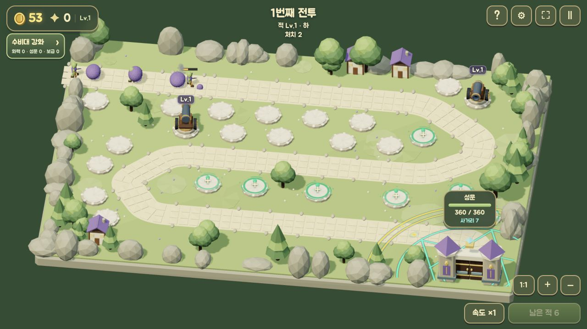
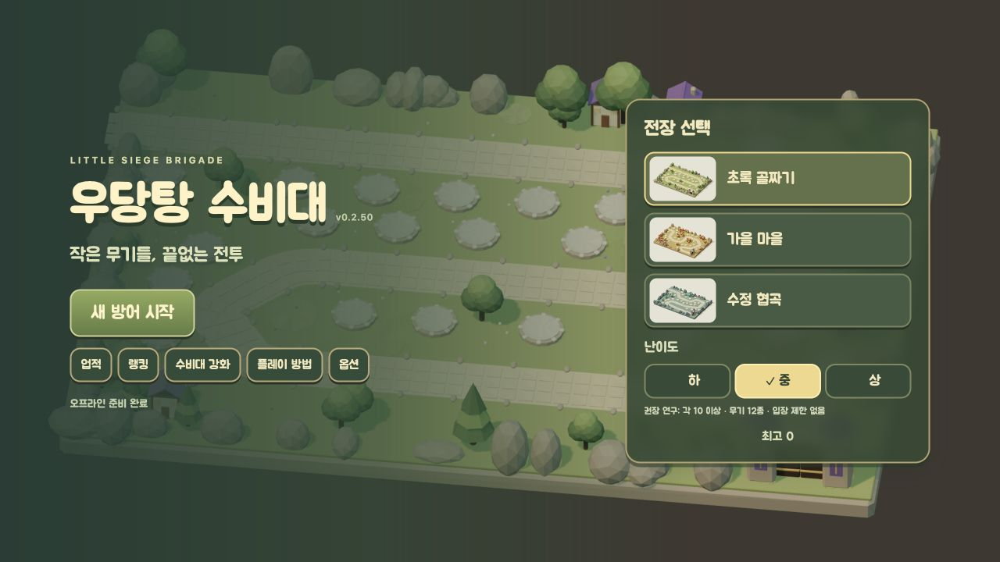
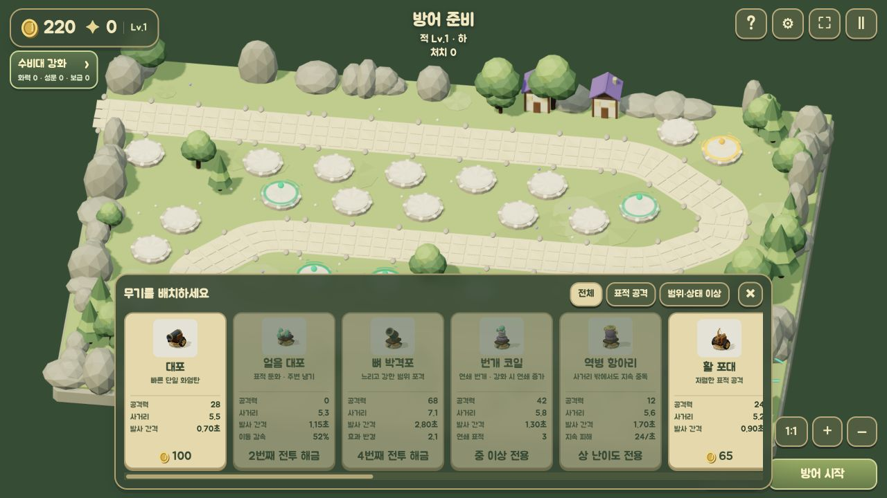

개발 중 · Android플레이 화면 크게 보기 ↗
LITTLE SIEGE BRIGADE
우당탕 수비대
무기를 배치하고 강화하며, 몰려오는 적으로부터 성문을 지키세요. 세 가지 전장에서 나만의 방어 전략을 만들어 갑니다.
Independent game studio
우리는 게임을 만듭니다.
당신의 일상에 오래 남을, 즐거운 한 장면을.
01 / 우당탕 수비대



개발 중인 게임의 실제 실행 화면입니다.
유니웨이는 모바일 게임을 만드는 독립 개발 스튜디오입니다. 일상에 즐거운 한 장면을 더하는 경험을 만들어 갑니다.
하나의 게임에서 시작해, 각자의 매력을 가진 다양한 플레이를 선보이겠습니다.
INDEPENDENT GAME STUDIO게임에 대한 궁금한 점, 함께 나누고 싶은 이야기.